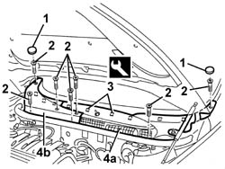

7055A18 L/H OR R/H SIDE RUBBING STRIP DECORATIVE SEAL - R+R
- Path
- Procedures > 70 FITTINGS > 7055 MOULDINGS ON PROTECTIONS > 7055A EXTERIOR MOULDINGS > 7055A18 L/H OR R/H SIDE RUBBING STRIP DECORATIVE SEAL - R+R
- Kind
- repair procedure (removal / refitting; the operation number is the code)
- Applies to
- all engines; all production periods
- Interactive page
- https://sloeber94.github.io/elrnDB-aGt/en/#/125001963
Applies to: all engines; all production periods
 Removing
Removing
 Refitting
RefittingOp. 5050B34 WINDSCREEN WIPER ARM/S COMPLETE WITH BLADE - R+R
(right and left)
1. Remove the covers.
2. Undo the bolts.
3. Release the inner retainers using the appropriate tool.
 | Name | Country |
|---|---|---|
3 | Scraper blade | 1.823.015.000 |
4. Remove left trim (4a) followed by right trim (4b).

Applies to: all engines; all production periods
Refitting
RemovingCheck that the cover is undamaged.
Fit right trim, then left trim and do up the inner retainers.
Tighten the bolts and fit the covers.
Op. 5050B34 WINDSCREEN WIPER ARM/S COMPLETE WITH BLADE - R+R
(right and left)